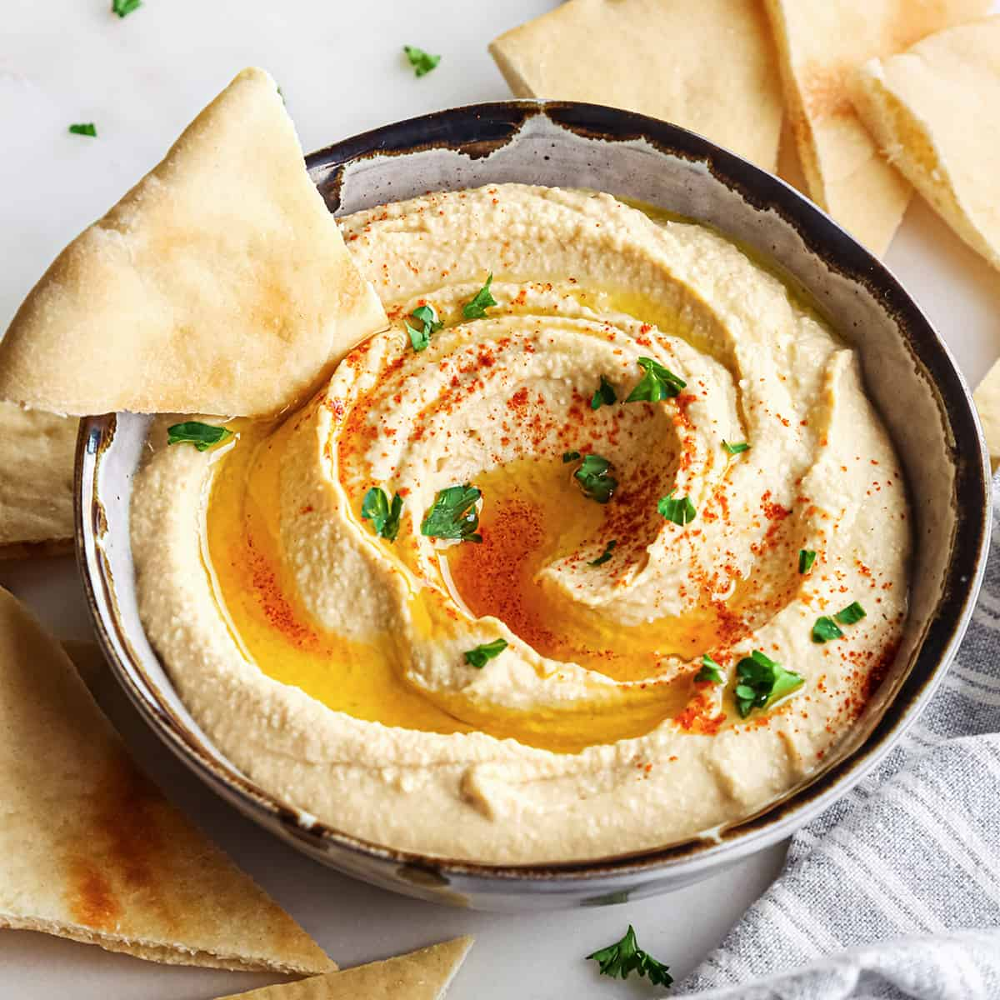

Home
Hummus

Description
This homemade hummus recipe is silky smooth and flavorful. It only takes 5 ingredients and 5 minutes to make the best, restaurant-quality hummus at home.
Ingredients
- 15 ounces Chickpeas (canned, drained and rinsed)
- ¼ cup Tahini
- 2 tbsp Olive Oil
- 3 ½ tbsp Lemon Juice
- 1 tbsp minced Garlic
- 1 tsp fine Sea Salt
- ½ tsp Ground Cumin
- 2 tbsp Water*
Steps
- Place ingredients in the order listed into the container of a Vitamix (or another high-powered blender).
- Blend, starting at low speed and increasing to high. Blend on high speed for about 60 seconds, or until the mixture is smooth.
- *If desired, add more water 1 Tablespoon at a time to achieve your desired consistency. I find 2 Tablespoons water creates the perfect smooth and creamy hummus.
- Serve immediately or store/chill to serve later.